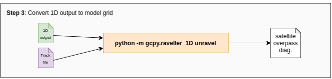

New in GCHP 13
Of interest to the group
- Erin's CEDS_GBD-MAPS "ON" by default
- GCHP satellite overpass diagnostics
- GCHP stretched-grids
- GCPy is a utility
- "Always-up-to-date" containers
Other noteworthy features
- Improved build system
- Improved documentation
- Unit Tester is retired
Release info
- Ready to be use: 13.0.0-beta.1
- Official release: ~January 2021
New in GCHP 13
Satellite diagnostics
New in GCHP 13
Satellite diagnostics
New in GCHP 13
Satellite diagnostics
New in GCHP 13
Satellite diagnostics
New in GCHP 13
Satellite diagnostics
- Facilitated by 1D output (new feature)
- Requires a "track file"
- Point to track file in HISTORY.rc

New in GCHP 13
Satellite diagnostics
New in GCHP 13
Stretched-grids
New in GCHP 13
Stretched-grids
New in GCHP 13
Stretched-grids
New in GCHP 13
Stretched-grids
#...
#------------------------------------------------
# Internal Cubed Sphere Resolution
#------------------------------------------------
CS_RES=48
STRETCH_GRID=ON
STRETCH_FACTOR=3.0
TARGET_LAT=25.0
TARGET_LON=112.0
# Primary resolution is an integer value
# 24 ~ 4x5, 48 ~ 2x2.25, 90 ~ 1x1.25, 180 ~ 1/2 deg, 360 ~ 1/4 deg
# Set stretched grid to ON or OFF. If ON, follow these rules for parameters:
# (1) Minimum STRETCH_FACTOR is 1.0001
# (2) Target lat and lon must be floats (contain decimal)
# (3) Target lon must be in range [0,360)
#...
This is a snippet from runConfig.shNew in GCHP 13
Stretched-grids
New in GCHP 13
Always up-to-date containers
New in GCHP 13
Always up-to-date containers
GCPy interactive job
- GEOS-Chem utilities
- Quickly visualize output
- Regridding data
- Satellite diagn. utils.
- Stretched-grid utils.
#!/bin/bash
#BSUB -Is
#BSUB -n 6
#BSUB -R "rusage[mem=32GB] span[hosts=1]"
#BSUB -q general-interactive
#BSUB -a 'docker(geoschem/gcpy)'
bash
This file is: /storage1/fs1/rvmartin/Active/Shared/LB-20201211/gcpy-interactive.bsubGCHP interactive job
- Create run directories
createRunDir.sh
- Run GCHP
mpirun -n 12 gchp
#!/bin/bash
#BSUB -Is
#BSUB -n 12
#BSUB -R "rusage[mem=32GB] span[hosts=1]"
#BSUB -q general-interactive
#BSUB -a 'docker(geoschem/gchp:13.0.0-beta.1-13-g924e47f)'
bash
This file is: /storage1/fs1/rvmartin/Active/Shared/LB-20201211/gchp-interactive.bsubNew in GCHP 13
Documentation on ReadTheDocs
New in GCHP 13
Documentation on ReadTheDocs
GCHP docs @ https://gchp.readthedocs.io
GCPy docs @ https://gcpy.readthedocs.io